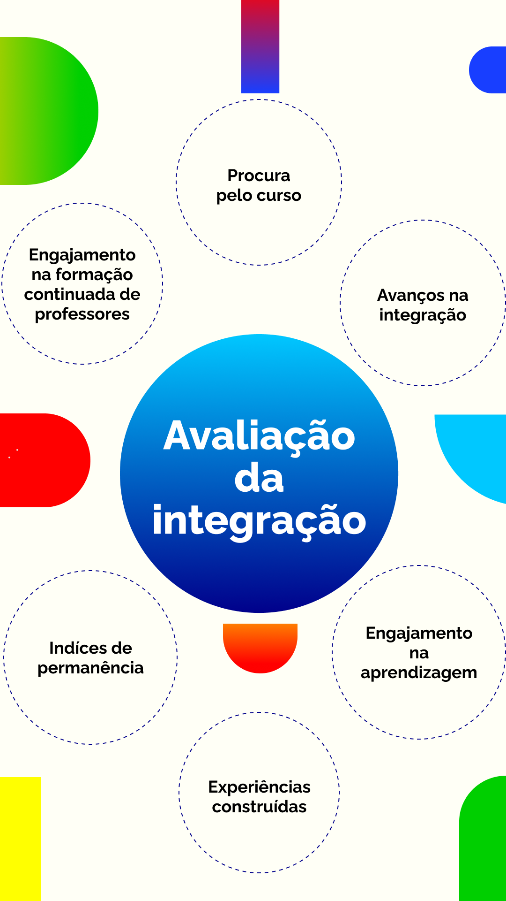

Indicadores de Avaliação e Planos de Integração
Permeando a elaboração e a efetivação dos instrumentos de gestão apresentados no decorrer do capítulo, propomos também a organização de indicadores de avaliação e planos de integração.
Os indicadores de avaliação são processos novos nas instituições de EPT e devem estar cada vez mais presentes, dada a sua importância. Eles são parte da avaliação global e podem ser organizados a partir de metas vindas da área de gestão, mas devem, essencialmente, dar conta de aspectos pedagógicos.
É comum, na realidade da EPT, serem realizadas reuniões de planejamento e avaliação de cursos e projetos. Propomos que estas reuniões sejam parte da cultura da instituição e, para além delas, sejam continuamente elaborados indicadores qualitativos desses processos. Podemos manter espaços de avaliação dos avanços na integração curricular, por exemplo, bem como de suas dificuldades. Mas por que pensar a integração como algo importante na EPT?
Primeiro, porque a integração é fundamento do Ensino Médio Integrado, podendo servir como referência em todas as outras experiências de EPT. O desafio da integração curricular na EPT é uma oportunidade para renovar e inovar processos de ensino e aprendizagem. Estamos falando de propostas e projetos pedagógicos comprometidos com a articulação criativa das dimensões do fazer, do pensar e do sentir como base da formação de personalidades críticas e transformadoras, de modo a possibilitar uma integração capaz de promover o despertar do olhar crítico e a problematização de dilemas em situações ambivalentes e contraditórias e que favoreça o processo afirmativo da construção da identidade de estudantes e professores (Machado, 2010).
Segundo, porque a integração é fundamento também da Política Nacional de Formação de Profissionais para a EPT (Brasil, 2024) e, por isso, deve ter um espaço da gestão para avançar cada vez mais no cotidiano dos cursos.
Assim, a integração curricular não deve ser apenas um princípio orientador, mas um eixo efetivo de planejamento e avaliação dentro da instituição. Para que esse processo avance, é necessário definir formas de acompanhamento e mensuração que permitam identificar os desafios e os avanços alcançados. Nesse sentido, a seguir, apresentamos um exemplo de organização de indicadores de avaliação para a integração curricular.

Título: Indicadores de Avaliação para Integração Curricular
Fonte: Maraschin (2024).
Elaboração: Prosa (2025c).
Esses indicadores foram pensados para avaliar a experiência de integração de um curso de EJA-EPT, seja de formação inicial e continuada (FIC), seja de formação técnica. Assim, ao planejar e desenvolver o curso, pode ser avaliado, nesta ordem: a procura pelo curso (se houve interessados ou não); os índices de permanência (ou seja, em qual momento teve maior evasão); e quais foram os avanços e as experiências de integração. Também é importante avaliar o engajamento dos estudantes na aprendizagem e dos professores com a formação continuada, visto que uma experiência de EJA pressupõe formação continuada de servidores.
Os indicadores de avaliação podem, ainda, ser organizados a partir de pesquisas e monitoramentos promovidos pela instituição, ou serem contratados grupos de pesquisas externos (Maraschin, 2024). Os índices de procura, permanência e conclusão de cursos têm sido utilizados para acompanhamento da EPT, inclusive com uma plataforma para este monitoramento, a , mas eles podem ser monitorados também pela .
Muitas instituições de EPT também têm incentivado a pesquisa, seja por oferta de cursos de formação continuada de professores e servidores, seja por programas de formação de pesquisadores em nível de mestrado, como o, e de doutorado. Estas experiências podem ser espaços de acompanhamento de dados e de práticas da EPT.
Além dos indicadores de avaliação, apontamos também a importância da elaboração de um plano de ensino de integração. Planejar aulas faz parte de um planejamento anterior que deve ser coletivo e reflete o PPP e o Projeto Pedagógico do Curso (PPC), que refere-se a um planejamento do curso que contém os objetivos, metodologias e formas de trabalhar. Nestes documentos já estão delineadas as metas e os princípios para a formação profissional. Portanto, ter um plano de ensino e de integração é fundamental para garantir a possibilidade de incorporação, devendo ser momentos que necessariamente fazem parte dos tempos e espaços das instituições.
Em relação ao plano de ensino, geralmente cada instituição tem o seu modelo e o documento compreende os objetivos, as metodologias, o processo avaliativo e as principais referências e atividades. Já o plano de integração poderá ser desenvolvido por semestre ou ano, por áreas ou por projetos interdisciplinares. Neste plano, são elaboradas pelos docentes e técnicos de ensino, com a máxima participação dos estudantes, ações de integração sempre ligadas à área profissional do curso e aos desafios atuais da sociedade. Os planos de integração são excelentes oportunidades para desenvolvimento de projetos de pesquisa e extensão, levando em consideração a inovação, a criatividade, o protagonismo estudantil, a interdisciplinaridade e as mudanças no mundo do trabalho.
O protagonismo e a autonomia dos estudantes são primordiais e os professores precisam assumir a mediação e desafiá-los gradativamente. Sabemos o quanto tem sido difícil implementar o currículo integrado e a interdisciplinaridade, mas acreditamos que a Rede Federal tem as condições e possibilidades de implementá-la.

Fonte: Gaia Schüler (2024).
No plano de integração, o planejamento da avaliação integrada é um ponto importante e deve ser, também, um item a ser organizado no coletivo (Maraschin, 2024). Portanto, entendemos que é a gestão educacional que promove e incentiva o currículo integrado e estas experiências de integração. No entanto, se a gestão educacional não tem sido uma cultura da instituição, torna-se necessário formar os sujeitos e criar os espaços para esta implementação, bem como refletir sobre o trabalho pedagógico desenvolvido na EPT e o que pode ser aperfeiçoado, atualizado e integrado nas diferentes realidades, sejam cursos de FIC, de Ensino Médio Integrado, subsequentes ou tecnológicos, sejam licenciaturas ou pós-graduação. Cada forma e nível tem sua especificidade e precisa ser considerado no planejamento de planos de ensino e de planos de integração.
Atualmente, vários desafios afligem o Ensino Médio, a juventude brasileira e as diferentes classes de trabalhadores. Por isso, promover uma educação com foco na resolução de problemas sociais e instrumentalizar os trabalhadores-estudantes para desafios reais – como o uso de tecnologias, inteligência artificial, problemas econômicos e ambientais, de inclusão e diversidade – não é uma necessidade teórica, mas um tema que precisa permear as aprendizagens e as vivências da formação humana e profissional dos estudantes da Educação Básica e da EPT.
Ao planejar, implementar e avaliar a integração curricular na EPT, estaremos caminhando rumo à educação omnilateral, que é
a concepção de educação ou de formação humana que busca levar em conta todas as dimensões que constituem a especificidade do ser humano e as condições objetivas e subjetivas reais para seu pleno desenvolvimento histórico
Assim, também estaremos contribuindo para a construção de uma educação politécnica em que o trabalho pedagógico romperá, por um lado, com a profissionalização estreita e, por outro, com uma educação geral, propedêutica, livresca e descolada do mundo do trabalho, tal como destaca Rodrigues (2008).